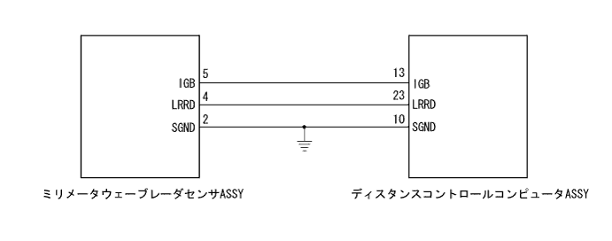
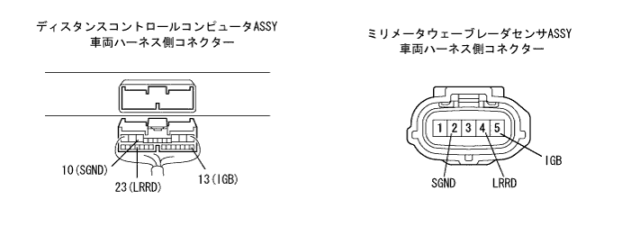

DTC U1102/72 Distance Control → Radar Communication Malfunction |
| DTC No. | Diagnosis Description
| Inspection Area |
|---|---|---|
| U1102/72 |
|
|

))| Step 1 | Inspect Wire Harness and Connector (Distance Control Computer Assembly - Millimeter Wave Radar Sensor) |
for reference.Disconnect the millimeter wave radar sensor assembly and distance control computer assembly connectors.
Using SST (Toyota electrical tester), measure the resistance between the connector terminals of the vehicle wire harness. (For Terminals of ECU, see)

| Tester Connection (Terminal Symbol) | Condition | Standard |
|---|---|---|
| 4(LRRD) - 23(LRRD) | Always | Below 1 Ω |
| 5(IGB) - 13(IGB) | Always | Below 1 Ω |
| Tester Connection (Terminal Symbol) | Condition | Standard |
|---|---|---|
| 23 (LRRD) - Body ground | Always | 10 kΩ or higher |
| 13 (IGB) - Body ground | Always | 10 kΩ or higher |
Using SST (Toyota electrical tester), measure the resistance between the terminals of the vehicle side harness connector of the millimeter wave radar sensor assembly.
| Tester Connection (Terminal Symbol) | Condition | Standard |
|---|---|---|
| 2 (SGND) - Body ground | Always | Below 1 Ω |
Using SST (Toyota electrical tester), measure the resistance between the terminals of the vehicle side harness connector of the distance control computer assembly.
| Tester Connection (Terminal Symbol) | Condition | Standard |
|---|---|---|
| 10 (SGND) - Body ground | Always | Below 1 Ω |
|
| ||||
| OK | |
| Step 2 | Replace Distance Control Computer Assembly |
Replace the distance control computer assembly with a new one. (see)
Perform initialization of the radar cruise control. (see)
| NEXT | |
| Step 3 | Clear DTC |
Using SST (TaSCAN), clear the DTCs. (see)
| NEXT | |
| Step 4 | Check DTCs (Radar Cruise Control System) |
Put the vehicle in the conditions under which the DTC is detected.
Drive within the cruise control set vehicle speed range.
Turn the cruise control main switch ON and put the system in vehicle-to-vehicle distance control mode standby.
Using SST (TaSCAN), check the DTCs. (see)
| Result | Proceed to |
|---|---|
| DTC U1102 is not output | A |
| DTC U1102 is output | B |
|
| ||||
| A | ||
| ||